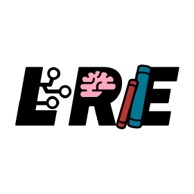
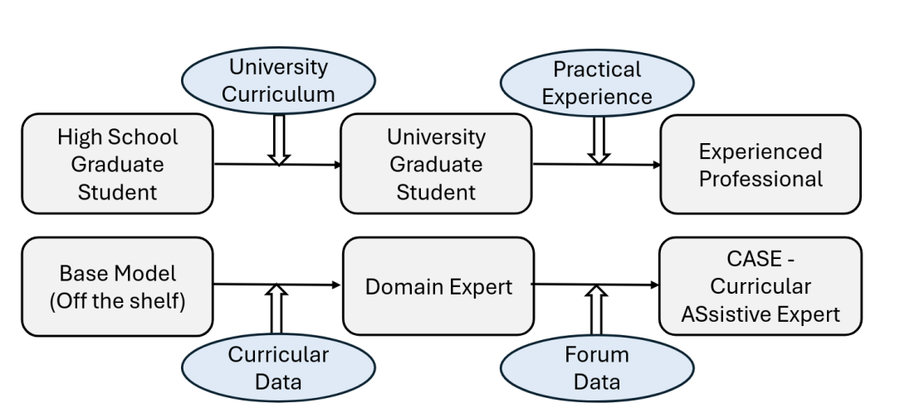
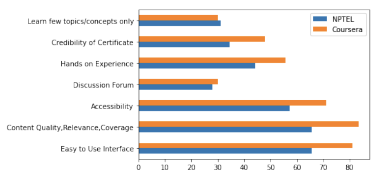

{kind=link}
|

Language, Reasoning, Education Lab @ ETH Zürich |
Bosch Research |

Google |
IIIT Bangalore |
Research Work(*denotes equal contribution) |
|  |
CASE: Curricular Data Pre-training for Building Generative and Discriminative Assistive Psychology Expert Models
Harne, S.*, Choudhury, M.N.*, Rao, M., Srikanth, T.K., Mehrotra, S., Vashisht, A., Basu, A., Sodhi, M. Findings of the Association for Computational Linguistics: EMNLP, 2024 paper This work presents a pre-training method for both discriminative and generative models in assistive psychology. By leveraging curricular texts from mental health institutes for pre-training, we introduce CASE-BERT, a discriminative model that identifies potential mental health disorders from forum posts. CASE-BERT achieves state-of-the-art performance, with an F1 score of 0.91 for Depression and 0.88 for Anxiety, enabling more accurate and efficient preliminary screenings. This approach enhances mental health assessments by automating early detection while addressing data privacy and scarcity challenges. |
|
|
RID-TWIN: An End-to-End Pipeline for Automatic Face De-Identification in Videos
Mukherjee, A., Choudhury, M.N., Jayagopi, D.B. arXiv preprint, 2024 paper Face de-identification in videos is a critical task for privacy preservation in computer vision. This work introduces RID-TWIN, a novel pipeline that leverages state-of-the-art generative models to decouple identity from motion, enabling automatic face de-identification in videos. The approach addresses challenges such as realism, temporal coherence, and preservation of non-identifiable features. Evaluations on the VoxCeleb2 dataset and a custom dataset demonstrate the effectiveness of RID-TWIN in producing de-identified videos while maintaining visual quality and consistency. |
|  |
A Systematic Review of Online Learning Platforms for Computer Science Courses
Praseeda, Choudhury, M.N., Chadha, B.S., Srinivasa, S. IEEE World Engineering Education Conference (EDUNINE), 2023 paper This systematic review examines various online learning platforms utilized for computer science education. The study aims to understand how technology has influenced learning systems through the integration of Information and Communication Technology (ICT) in online education. By analyzing existing platforms, the review identifies trends, challenges, and best practices, providing insights into the effectiveness of online learning tools in delivering computer science courses. |
|
Source code from Jon Barron |